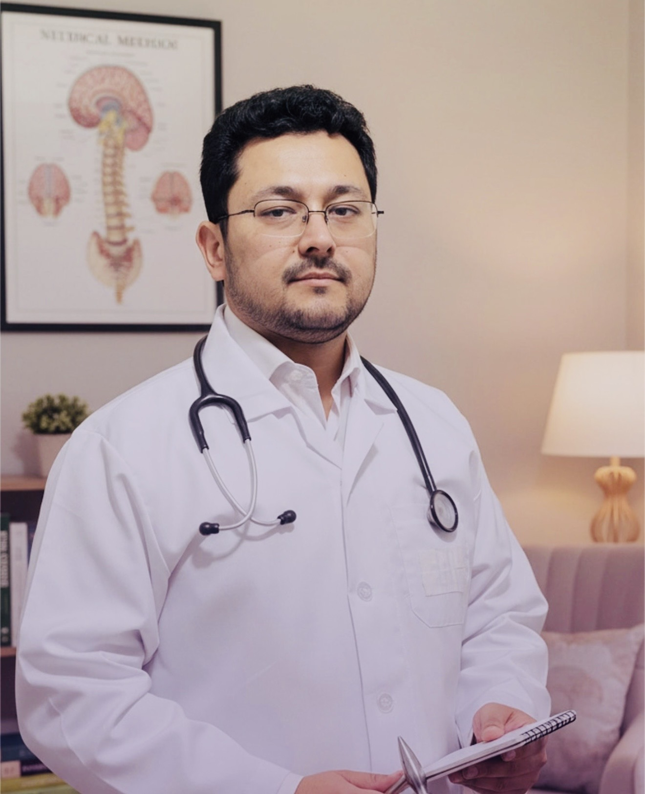

〰
EEG
الکتروانسفالوگرافیثبت و ارزیابی فعالیت الکتریکی مغز در موارد مناسب بالینی.
با استفاده از روشهای علمی و تکنولوژیهای نوین، برای سلامت ذهن و اعصاب شما در کنار شما هستیم.

style="width:220px;height:280px;object-fit:cover;border-radius:20px;"متخصص امراض روان و اعصاب
مرکز تداوی تخصصی امراض روان و اعصاب نظری با تمرکز بر ارزیابی، تشخیص و درمان تخصصی مشکلات روانپزشکی و نورولوژیک فعالیت میکند.
ثبت و ارزیابی فعالیت الکتریکی مغز در موارد مناسب بالینی.
روش غیرتهاجمی تحریک مغز برای موارد منتخب و طبق ارزیابی تخصصی.
بازخورد عصبی در برنامههای درمانی و آموزشی منتخب.
آموزش تنظیم پاسخهای بدن با استفاده از بازخورد زیستی.
بررسی شرح حال، علایم و نیازهای مراجعهکننده.
انتخاب روش تشخیصی یا درمانی بر اساس شرایط فرد.
پیگیری روند درمان و تنظیم برنامه در صورت نیاز.
توصیههای عمومی برای کمک به حفظ سلامت روان و سیستم عصبی
پرهیز: کمخوابی، گرسنگی طولانی، کمآبی، استرس و محرکهای شخصی.
پرهیز: کمخوابی، قطع خودسرانه دارو، الکل و مواد مخدر و محرکهای شناختهشده.
پرهیز: کافئین نزدیک خواب، استفاده از موبایل قبل از خواب، خواب نامنظم و چرت طولانی روزانه.
پرهیز: الکل و مواد مخدر، انزوا، بینظمی خواب و قطع خودسرانه دارو.
پرهیز: مصرف زیاد کافئین، نیکوتین، مواد محرک، کمخوابی و استرس شدید.
پرهیز: قطع خودسرانه درمان، کمخوابی و کنار گذاشتن برنامه درمانی توصیهشده.
پرهیز: بیخوابی، بینظمی خواب، الکل و مواد مخدر و قطع خودسرانه دارو.
پرهیز: کمتحرکی، کمآبی، بینظمی دارویی و تغییر خودسرانه دارو.
پرهیز: قرار گرفتن در معرض صدای بلند و محیطهای پر سر و صدا.
پرهیز: کمخوابی، مصرف زیاد کافئین و مصرف خودسرانه دارو.
توجه: این توصیهها عمومی هستند و جایگزین توصیه اختصاصی پزشک نمیشوند. داروها را بدون مشورت پزشک قطع یا تغییر ندهید.